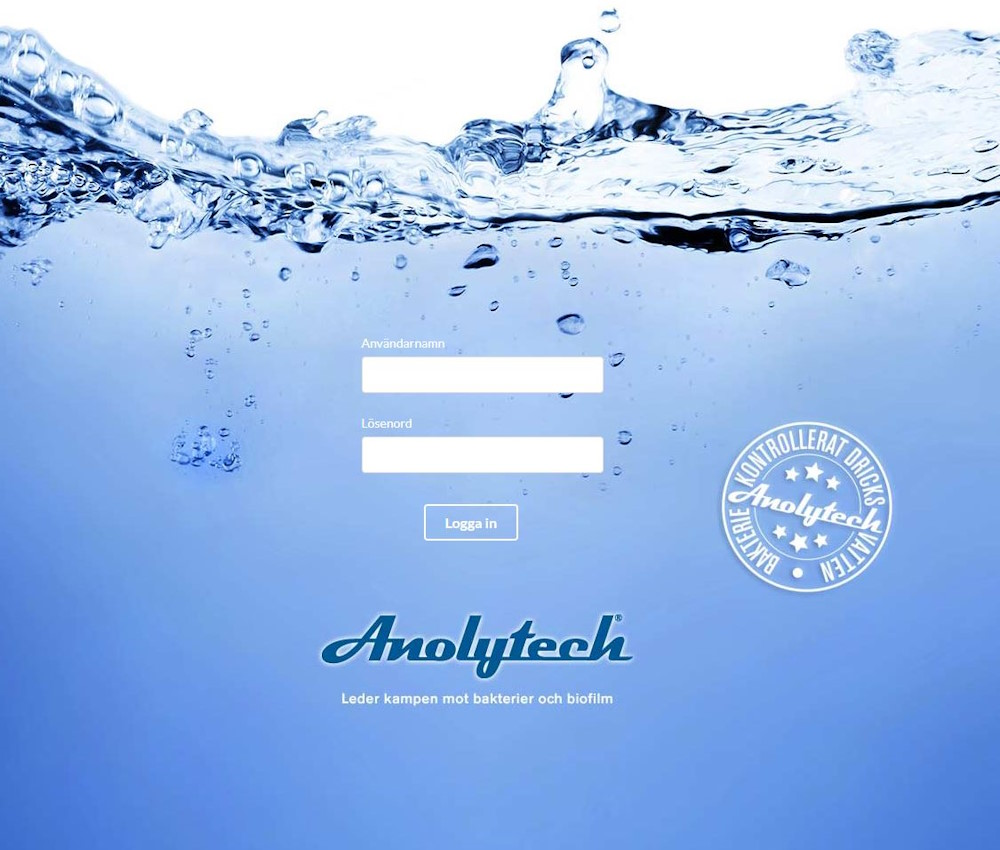

AnolytechApp
En angularJS-webbapp som jag var med och utvecklade mellan 2015 och 2019 när jag jobbade för Marknadslab Interaktion i Ystad. Anolytech är ett företag som säljer produkter och tjänster för att bekämpa bakterier och biofilm. Webbappen är en intern applikation som används av företagets anställda för att hantera företagets tjänster och kunder.
Jag har inte tagit med någon länk till webbappen eftersom den är helt omgjord idag.
Tekniker och kompetenser som jag använde i detta projektet.
HTML
CSS
Responsive Design
JavaScript
JQuery
AngularJS
PHP
MySql
Git och Gitlab
